Glucose is the most common sugar on Earth. It’s what cellulose, starch and your blood sugar are built from. Of the eight sugars in its family (the D-aldohexoses), it’s the only one whose ring can put every OH group in a relaxed, uncrowded position. That’s no coincidence, and by the end of today you’ll be able to see why.
Today we learn how molecules change shape without breaking bonds:
Conformers: shapes reached by turning a single bond
Newman projections: looking straight down a C–C bond
Energy profiles: why staggered beats eclipsed, and anti beats gauche
Populations: turning an energy gap into “how much of each”
Cyclohexane chairs: axial, equatorial and the ring flip
Last time (Day 3) we followed protons. Today we keep every bond and follow the shape.
Same molecule, many shapes
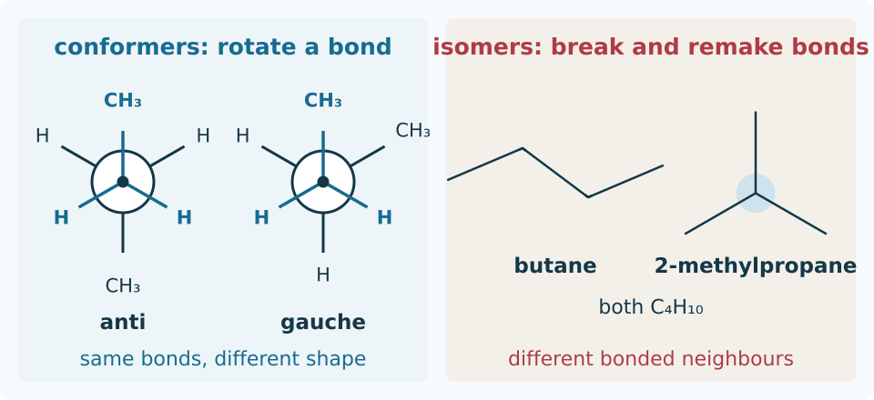
Conformers versus constitutional isomers
Turning a C–C single bond changes the shape but keeps every bonded neighbour. Those shapes are conformers: one molecule, not isomers. Butane and 2-methylpropane have different neighbours, so they’re constitutional isomers.
Pick a bond, then pick where your eye is
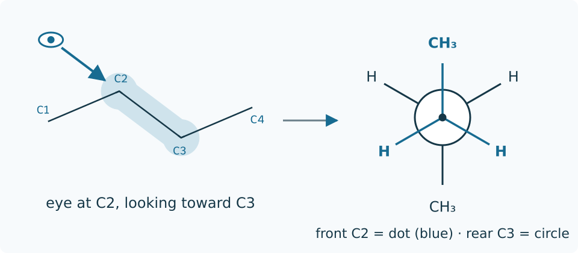
Looking along the C2–C3 bond of butane
In a Newman projection you look straight down one bond. The front carbon is the dot where its three bonds meet; the rear carbon is the circle, with bonds coming out from behind it.
Try it: you now look from C3 toward C2 instead. Which carbon is the dot?
C3. Whichever carbon is nearer your eye is the front carbon, so the roles swap and you have to redraw both groups of three.
Staggered and eclipsed
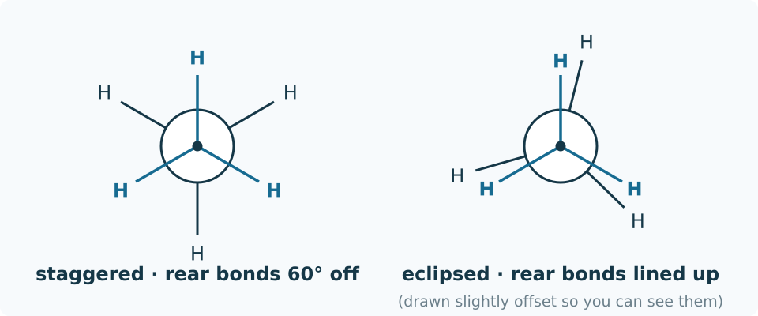
Staggered and eclipsed ethane
Staggered: rear bonds sit between front bonds, 60° apart.
Eclipsed: rear bonds hide behind front bonds, 0° apart. We draw them slightly offset so you can see them.
The angle between a front bond and a rear bond is the dihedral angle.
Ethane’s energy as it turns
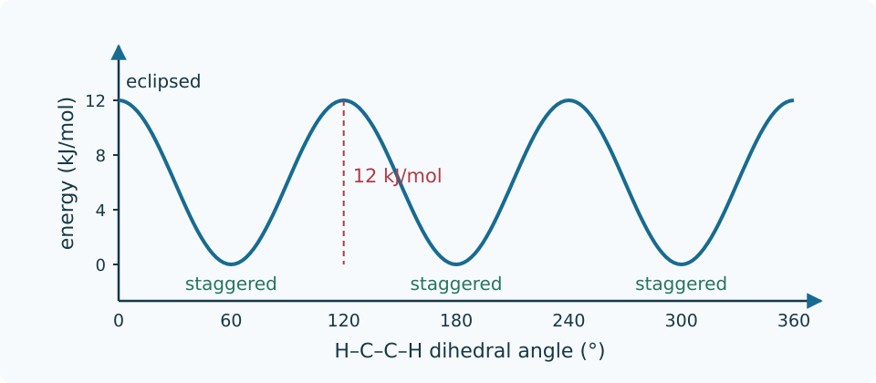
Ethane torsional energy
Eclipsed costs about 12 kJ/mol (torsional strain, roughly 4 per H/H pair). A full turn passes three identical staggered minima, at 60°, 180° and 300°.
Try it: is every single bond free to rotate?
No. There’s always some barrier, rings lock bonds in place, and some “single” bonds have partial double-bond character, like the C–N bond of amides (Week 4).
Butane: one full turn
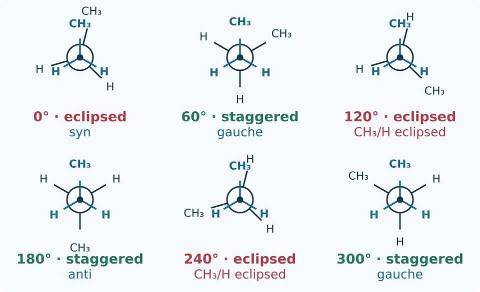
Butane through one full turn
Hold the front CH₃ at 12 o’clock and turn the rear carbon. Track the two CH₃ groups: anti puts them at 180°, gauche at ±60°. Both are staggered.
Try it: how many gauche minima are there in one full turn?
Two, at +60° and −60° (300°). They’re mirror images with equal energy, but they’re distinct conformations.
Butane: what each crowding costs
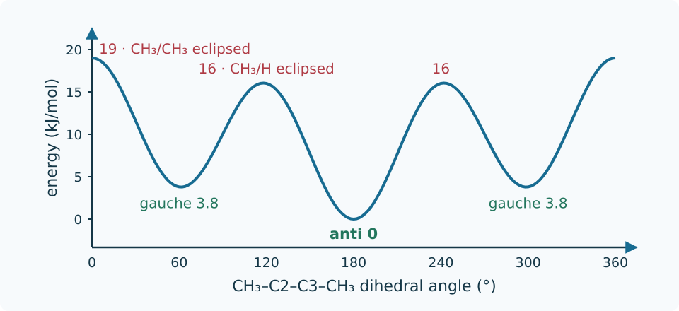
Butane torsional energy
interaction
cost (kJ/mol)
H/H eclipsed
4
CH₃/H eclipsed
6
CH₃/CH₃ eclipsed
11
CH₃/CH₃ gauche
3.8
Lower energy means more, not all
w = e^{-\Delta G/RT} \qquad \text{fraction} = \frac{w}{\sum w}
state
ΔG (J/mol)
ΔG/RT
weight w
fraction
A
0
0
1
1/1.244 = 0.804
B
3500
1.412
0.244
0.244/1.244 = 0.196
At 298.15 K, RT = 8.314 × 298.15 ≈ 2479 J/mol. ΔG and RT must use the same units, so ΔG/RT has none.
Try it: what’s the weight of the state with ΔG = 0?
exactly 1, because e⁰ = 1. The reference state always has weight 1. The weights don’t sum to 1 until you normalise them.
How the energy gap shifts the balance
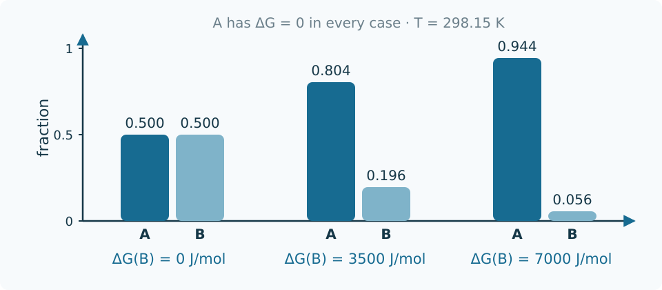
Populations from free-energy gaps
Equal energies give 50/50. A bigger gap tilts the balance more, but a finite gap never makes the minor state zero.
Try it: add 1000 J/mol to both states. Do the fractions change?
No. Both weights get the same factor e^(−1000/RT), which cancels on normalising. Only the energy difference matters.
Equilibrium and rate are different questions
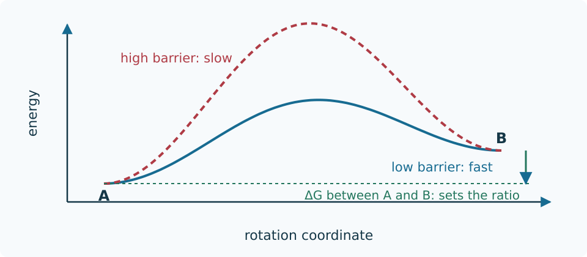
Equilibrium versus rate
The gap between A and B sets the equilibrium ratio. The barrier between them sets how fast they interconvert.
Try it: two molecules have the same ΔG between conformers but different barriers. Same rotation rate?
No. Same ratio at equilibrium, but the one with the higher barrier interconverts more slowly.
Rings: a flat drawing isn’t a flat molecule
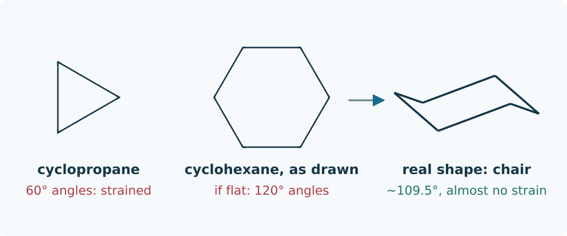
Flat ring drawing versus the chair
Rings stop full rotation. Cyclopropane has to be flat, so its 60° angles are badly strained. Cyclohexane puckers into a chair, where every angle is close to tetrahedral and every C–H is staggered.
The chair: axial and equatorial
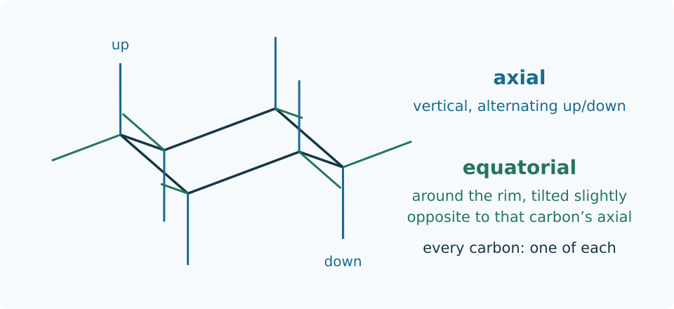
Axial and equatorial positions in a chair
Each carbon has one axial bond (vertical, alternating up and down around the ring) and one equatorial bond (out around the rim, tilted slightly the other way).
Try it: does “equatorial” mean “down”?
No. Equatorial bonds point up on some carbons and down on others. Axial/equatorial is the bond’s direction; up/down is which face of the ring it’s on.
The ring flip
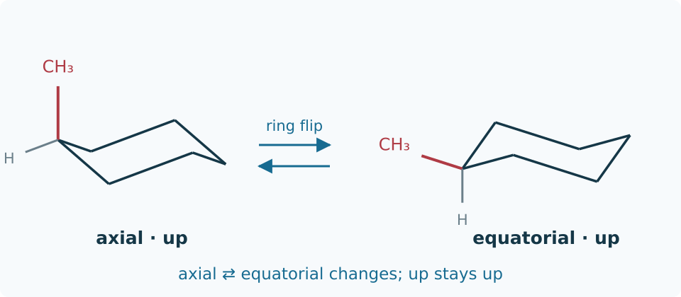
A ring flip swaps axial and equatorial
A chair can flip into the other chair by turning bonds only. Every axial group becomes equatorial (and back), but up stays up.
Try it: an axial-down group goes through a ring flip. Where does it end up?
Equatorial-down. The flip swaps axial and equatorial, never up and down.
Why big groups go equatorial
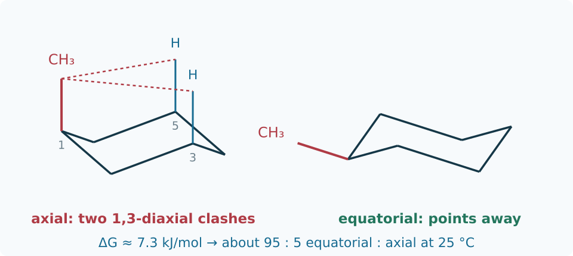
Why methyl prefers equatorial
An axial methyl crowds the axial H atoms on C3 and C5: 1,3-diaxial interactions. Equatorial is lower by about 7.3 kJ/mol, so w = e^(−7300/2479) ≈ 0.053, giving about 95 : 5 at 25 °C.
Cis and trans survive a ring flip
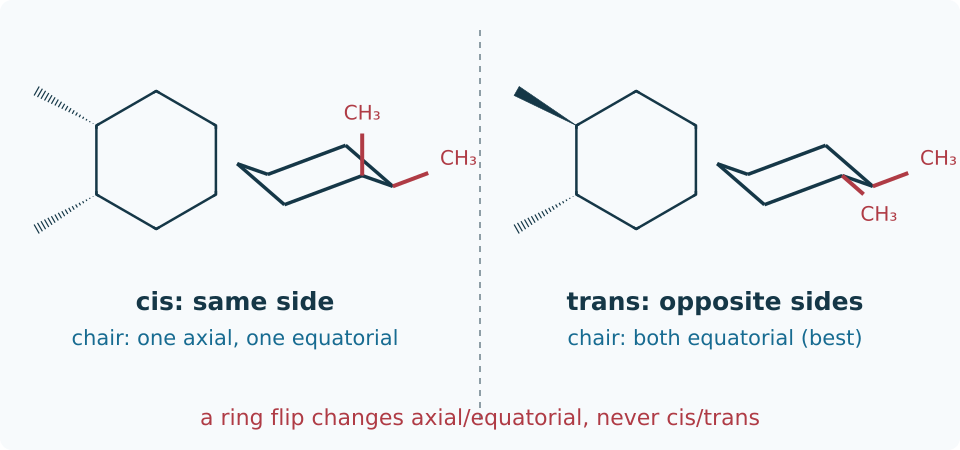
cis and trans in a ring
Cis = both groups on the same face (up/up or down/down); trans = opposite faces. A ring flip changes axial and equatorial, but never the faces.
Try it: a pair of groups is cis in one chair. Can the ring flip make it trans?
No. Each group keeps its face, so cis stays cis. Turning cis into trans means breaking a bond: that’s a different stereoisomer, which is tomorrow’s topic.
Back to glucose
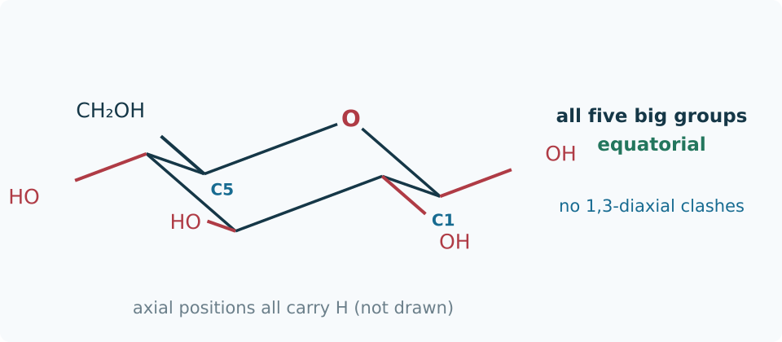
β-D-glucose in its chair
In β-D-glucose all five big groups, the four OH groups and the CH₂OH, sit equatorial. Every axial position holds a small H, so there are no 1,3-diaxial clashes.
Mistakes we see every year
mistake
fix
calling anti and gauche butane isomers
same neighbours: they’re conformers
“staggered” taken to mean “anti”
gauche is staggered too
forgetting the H atoms on the rear carbon
each carbon has three groups
flipping a chair and turning up into down
a flip swaps axial/equatorial only
ΔG in kJ/mol divided by R in J/(mol K)
use the same units
calling weights “fractions”
divide by the sum first
“the axial conformer is absent”
lower population, not zero
using population to predict speed
rate depends on the barrier
Summary
concept
key fact
conformer
same bonds, different shape by rotation
Newman projection
front = dot, rear = circle
ethane
staggered minima, eclipsed +12 kJ/mol
butane
anti < gauche (3.8) < eclipsed (16, 19)
population
w = e^(−ΔG/RT), then divide by the sum
equilibrium vs rate
gap sets the ratio, barrier sets the speed
chair
one axial + one equatorial per carbon
ring flip
axial ⇄ equatorial; up stays up
big substituents
prefer equatorial (1,3-diaxial)
Next: stereochemistry, the 3D differences no rotation can undo (Day 7). Practice:exercises · self-check